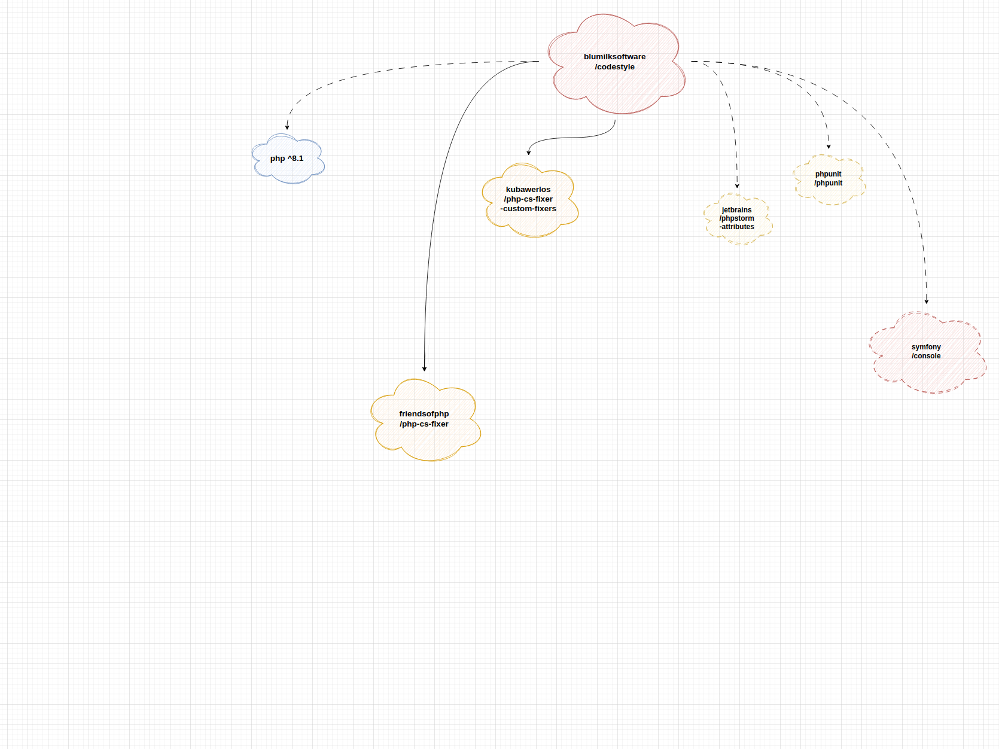
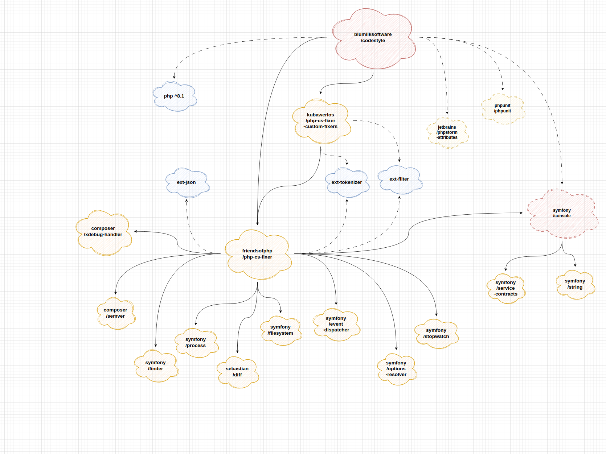
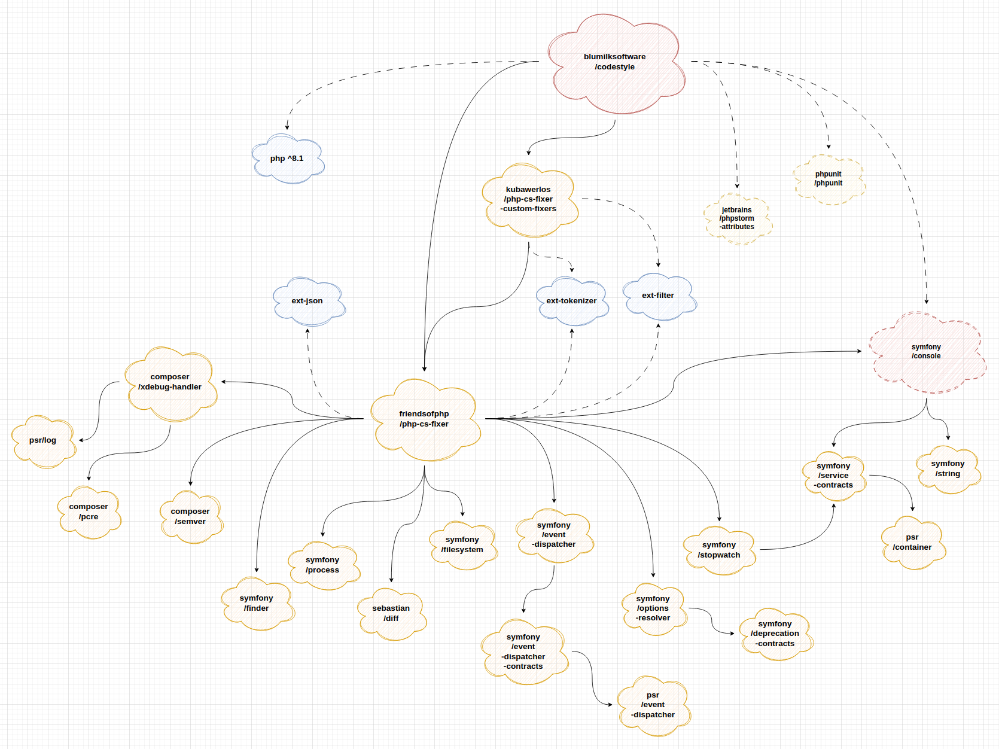

Środowiska deweloperskie
Projektowanie i programowanie systemów internetowych I
wykład 4 z 15

mgr inż. Krzysztof Rewak
Zakład Informatyki, Wydział Nauk Technicznych i Ekonomicznych
Collegium Witelona Uczelnia Państwowa
Blumilk sp. z o.o.
Agenda
- Wersjonowanie oprogramowania
- Zarządzanie zależnościami
- Zmienne środowiskowe
- Jedna aplikacja, wiele środowisk
- Podsumowanie
Po co wersjonujemy oprogramowanie?
Większość oprogramowania na naszych komputerach ma swoje wersje. Czasami mają one barwne nazwy takie jak Sonoma, czasami mają dopiski alpha i beta, ale najczęściej można spotkać wartości liczbowe.
przykładowo PHP występuje w wersji:
8.3.3
i należy to czytać jako:
major . minor . patch
zmiana wersji
major oznacza z reguły brak kompatybilności wstecznej w interfejsach
zmiana wersji
minor oznacza zazwyczaj nowe funkcjonalności, które nie łamią zasad kompatybilności
zmiana wersji
patch oznacza drobne zmiany, które nie powinny wpłynąć na użytkowanie poprzez interfejsy
Idąc dalej na przykładzie PHP:
var_dump((fn(): bool => 0o16 === 16)())
PHP 8.3:
bool(false)
PHP 8.0:
Parse error: syntax error, unexpected identifier "o16" in /test.php on line 3
PHP 7.4:
Parse error: syntax error, unexpected 'o16' (T_STRING) in /test.php on line 3
PHP 5.6:
Parse error: syntax error, unexpected ':' in /test.php on line 3
PHP 4.0:
Parse error: parse error in /test.php on line 3
A to przecież tylko interpreter języka, którego głównie się używa poprzez jeden entrypoint, a cała reszta działa "pod spodem".
W przypadku bardziej skomplikowanych API robi się to o wiele bardziej skomplikowane.
Konkretyzujmy wersje
Dlatego dobrą praktyką jest zawsze wypisanie wszystkich wymaganych zależności naszego systemu razem z dokładnymi wersjami.
I tyczy się to wszystkiego: systemów zarządzania bazami danych, wersji kompilatorów... ale też wykorzystywanych bibliotek.
Manifest zależności
Stąd też popularność rozwiązań takich jak Vagrant czy Docker: dzięki nim można stworzyć pewnego rodzaju manifest zależności, który dodajemy do repozytorium projektu, a dany supervisor już sam doinstaluje wszystkie potrzebne wersje.
Zależności
Za zależności (ang. dependencies) - w kontekście tej części wykładu - będziemy uważać wszelkiej maści biblioteki, pakiety czy paczki dołączane do budowanego przez nas systemu informatycznego. Zależnością będzie też core frameworka, choć tutaj relacje zależności może być bardziej skomplikowana niż przy zwykłej dołączanej bibliotece.
Tylko to, co istotne
Dobrą praktyką jest trzymanie w repozytorium tylko kodu związanego bezpośrednio z projektem. Wszystkie zależności powinny być poza repozytorium (tutaj przydaje się git ignore).
Jeżeli aplikacja napisana w Django składa się z dosłownie trzech widoków, po co dodawać do repozytorium setki plików z kodem źródłowym samego Django? Tym bardziej, że można je łatwo pobrać z internetu w każdym momencie?
Oczywiście dodawanie listy takich zależności w pliku readme byłoby bardzo ciężkie do obsługi. Tym bardziej, że zależności często mają swoje zależności i może się tego naprodukować bardzo dużo.

schemat zależności paczki blumilksoftware/codestyle

schemat zależności zależności paczki blumilksoftware/codestyle

schemat zależności zależności zależności paczki blumilksoftware/codestyle
Zarządzanie zależnościami
Stąd też praktycznie każdy współczesny język programowania używany przy tworzeniu systemów internetowych ma towarzyszący mu program do zarządzania zależnościami. Należy wymienić:
- npm dla JavaScriptu
- Composer dla PHP
- pip dla Pythona
- NuGet dla C#
- Maven dla Javy
- RubyGems dla Ruby
npm install
Jedno polecenie i w zasadzie mamy zainstalowane wszystkie zależności naszego projektu.
composer require blumilksoftware/codestyle
Jedno polecenie i mamy dodaną do projektu nową bibliotekę.
pip install Django --upgrade
Jedno polecenie i mamy zaktualizowaną do najnowszej konkretną zależność.
Pliki manifestu i locki
Większość systemów zarządzania zależnościami bazuje na dwóch plikach: manifeście właściwym oraz zablokowanym szczegółowym tzw. locku.
Np.
composer.json przetrzymuje m. in. listę wymaganych dla projektu bibliotek, ale można w nim określić dowolny stopień szczegółowości wersji, nawet tylko wersję major. Jest to plik nadpisywany poleceniami Composera, ale można go też edytować ręcznie.
Z kolei
composer.lock jest już plikiem generowanym przez Composera. Zawiera pełną listę zależności (wraz z ich zależnościami) w dokładnych wersjach. Polecenie composer install instaluje zależności z tego pliku.
Dzięki temu repozytoria są szczuplejsze, a zależności zawsze takie same i łatwe do aktualizowania.
Security by design
Większość menadżerów zależności ma wbudowane takie polecenia jak
npm outdated czy composer audit, które sprawdzają czy na liście zależności nie znalazły się m. in. problemy związane z bezpieczeństwem.
Niemniej jednak warto wiedzieć, że źle zbudowana i zarządzana sieć zależności może być źródłem wielu kłopotów.
Definicja
Zmienna środowiskowa (ang. environment variable) – to nazwana wartość, zazwyczaj zawierająca ciąg znaków, przechowywana i zarządzana przez powłokę [systemową]. [1]
Wiele frameworków webowych opiera się mocno na zmiennych środowiskowych. Najczęściej, zamiast wpisywać je faktycznie do systemu, można nimi manipulować poprzez tzw. pliki env.
Plik
.env nie powinien być commitowany w żadnym wypadku do repozytorium! Powinien być tylko i wyłącznie konfiguracją jednego konkretnego środowiska, np. mojego.
Stąd też w wielu projektach pojawiają się inne pliki env. Najczęściej można spotkać
.env.example, który będzie szablonem dla głównego pliku.
Kolejno
.env.ci może być zbudowanym już plikiem na potrzeby CI/CD, .env.testing będzie używany podczas automatycznych testów i tak dalej.
APP_NAME=Laravel
APP_ENV=local
APP_KEY=
APP_DEBUG=true
APP_URL=http://localhost
LOG_CHANNEL=stack
LOG_DEPRECATIONS_CHANNEL=null
LOG_LEVEL=debug
DB_CONNECTION=mysql
DB_HOST=127.0.0.1
DB_PORT=3306
DB_DATABASE=laravel
DB_USERNAME=root
DB_PASSWORD=
BROADCAST_DRIVER=log
CACHE_DRIVER=file
FILESYSTEM_DISK=local
QUEUE_CONNECTION=sync
SESSION_DRIVER=file
SESSION_LIFETIME=120
# (...)
Tak może wyglądać plik
.env.example projektu w Laravelu.
Jeżeli w konektor bazy danych skorzysta z
$_ENV["DB_PASSWORD"], nie trzeba będzie hardkodować żadnego hasła do żadnej bazy danych w kodzie.
Elastyczność tego rozwiązania polega na tym, że w dwuosobowym zespole Janek może mieć hasło
password, a Wojtek - NpqJ9%p%jxJ#xNjhbx#KJwJEo0R3AVUq^Fuw. Jeżeli do zespołu dojdzie nowa osoba, może również ustawić własne hasło do bazy zlokalizowanej przecież na swoim komputerze... ale także własne adresy, porty i inne zmienne.
Jeżeli korzystamy z Vagranta lub Dockera, dobrze jest w pliku
.env.example umieścić już gotową konfigurację pod wszystkie zależne usługi. Może to zminimalizować czas potrzebny na stawianie nowego projektu i ułatwić pracę nad takim projektem.
Highlights
- znalezienie dobrych narzędzi to może nie aż połowa, ale jakaś część sukcesu
Źródła i do dalszego poczytania